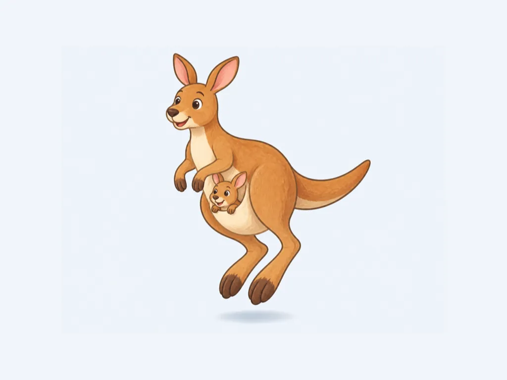
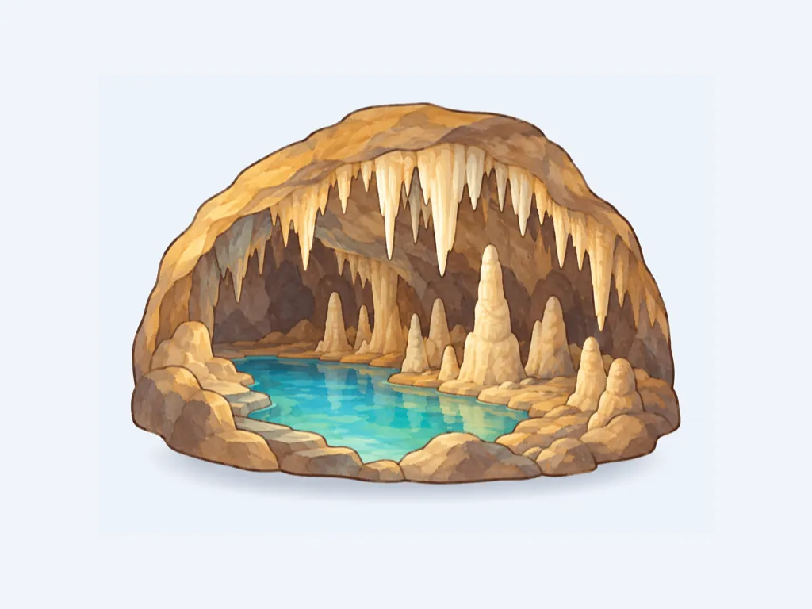
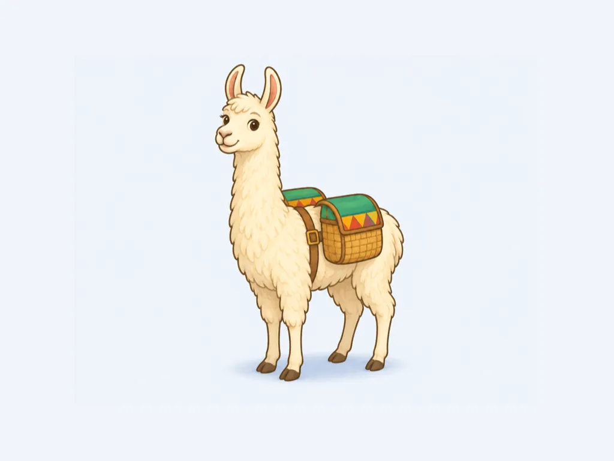
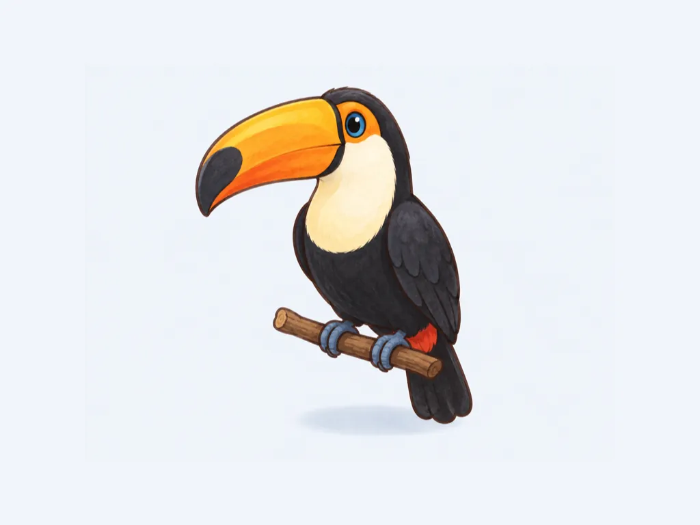

ag
 ag 국기
ag 국기ag
ag 국기ar
 ar 국기
ar 국기ar
ar 국기
au au 국기
au 국기au
au 국기bb
 bb 국기
bb 국기
bbbb 국기
bo bo 국기
bo 국기bo
bo 국기
br br 국기
br 국기 brbr 국기
brbr 국기 bs
bs bs 국기
bs 국기 bz
bz bz 국기
bz 국기 bzbz 국기
bzbz 국기 ca
ca ca 국기
ca 국기 caca 국기
caca 국기 cl
cl cl 국기
cl 국기 clcl 국기
clcl 국기 co
co co 국기
co 국기 coco 국기
coco 국기 cr
cr cr 국기
cr 국기 crcr 국기
crcr 국기 cu
cu cu 국기
cu 국기 dm
dm dm 국기
dm 국기 dmdm 국기
dmdm 국기 do
do do 국기
do 국기 ec
ec ec 국기
ec 국기 fj
fj fj 국기
fj 국기 fm
fm fm 국기
fm 국기 fmfm 국기
fmfm 국기 gd
gd gd 국기
gd 국기 gt
gt gt 국기
gt 국기 gtgt 국기
gtgt 국기 gy
gy gy 국기
gy 국기 hn
hn hn 국기
hn 국기 hnhn 국기
hnhn 국기 ht
ht ht 국기
ht 국기 jm
jm jm 국기
jm 국기 jmjm 국기
jmjm 국기